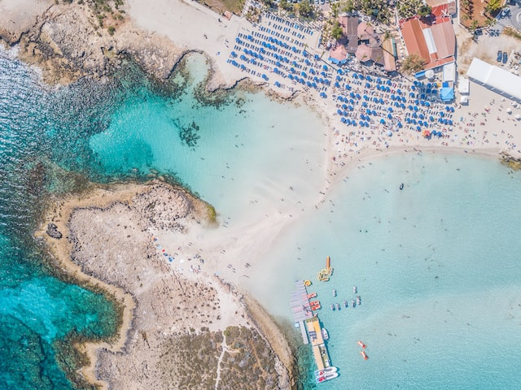
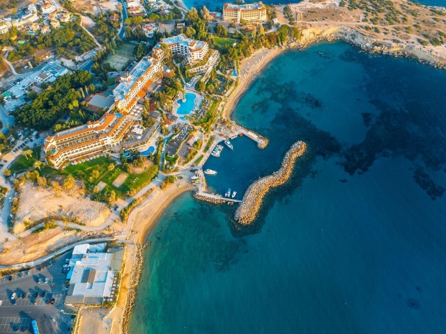
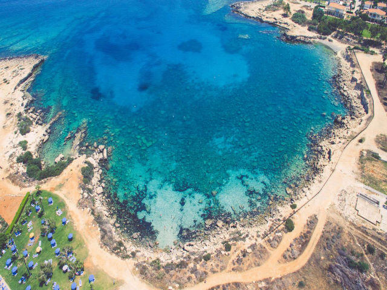
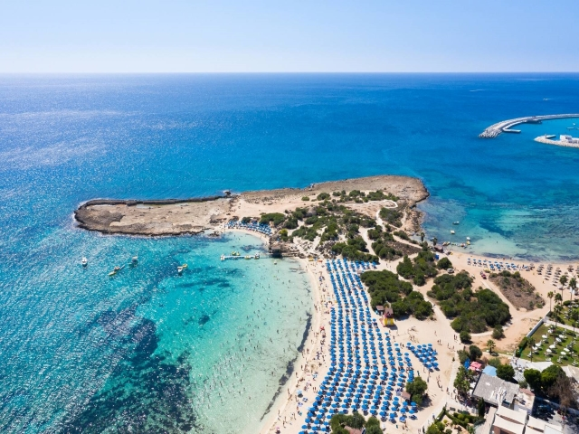

Vacation
Cyprus is a popular vacation destination during the summer months, as the weather is generally warm and sunny. The island is known for its long stretches of sandy beaches, crystal-clear waters, and picturesque landscapes.

Weather
The summer weather in Cyprus is typically hot and dry, with temperatures often reaching over 30°C (86°F). The humidity is usually low, which makes the heat more tolerable. The sea is also warm, with an average temperature of around 26°C (79°F), making it perfect for swimming and other water activities. The days are long and sunny, with an average of 11 hours of sunshine per day. It is important to remember to use sunscreen and stay hydrated to avoid sunburn and heat stroke. Despite the hot weather, evenings can be cool, so it is a good idea to bring a light jacket or sweater.
Beaches
The beaches in Cyprus range from small, secluded coves to long stretches of sandy shoreline. Many of the beaches in Cyprus are well-maintained and have amenities such as showers, toilets, and sun loungers.
Nissi Beach
Located in Ayia Napa, Nissi Beach is known for its crystal-clear waters and white sandy shores, as well as its lively atmosphere and numerous water sports activities.
Coral Bay
Located in Paphos, Coral Bay is a popular beach with fine golden sand and crystal-clear waters. It is known for its beautiful surroundings and is a popular spot for swimming and sunbathing.
Fig Tree Bay
Located in the resort town of Protaras, Fig Tree Bay is a long, wide beach with fine, golden sand. It's a popular spot for swimming and snorkelling, and there are plenty of sun loungers and umbrellas available for rent.
Makronissos Beach
Located just a short distance from the popular resort town of Ayia Napa, and it's known for its crystal-clear waters and fine, golden sand. The beach is popular for swimming, sunbathing, and water sports like jet skiing and parasailing.